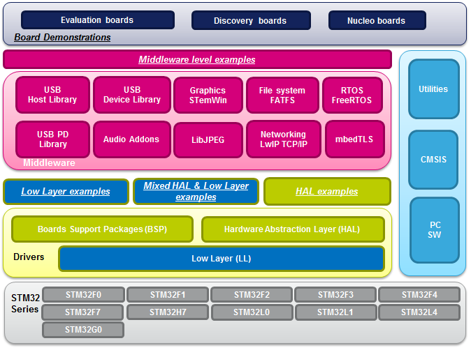

Release Notes for USB Device Audio Streaming Software Expansion
Copyright 2019 STMicroelectronics

License
This software component is licensed by ST under Ultimate Liberty license SLA0044, the "License". You may not use this package except in compliance with the License. You may obtain a copy of the License at:
Purpose
STM32Cube is an STMicroelectronics original initiative to ease developers life by reducing development efforts, time and cost. STM32Cube covers the STM32 portfolio.
The STM32Cube firmware solution offers a straightforward API with a modular architecture, making it simple to fine tune custom applications and scalable to fit most requirements:

For quick getting started with the STM32Cube firmware package, or to download firmware updates and all the latest documentation refer to www.st.com/stm32cubefw.
USB Device Audio Streaming is an expansion software package for STM32Cube. It shows how to use an STM32 device to implement a USB based headset and microphone. Audio Out streaming allows transferring audio data from the USB Host (i.e. PC) to the speaker or headset. And Audio In streaming allows transferring audio data from a microphone to the USB Host.
It provides support of audio
playback and recording with advanced features requested clients. It
supports:
- Playback Audio
- Recording Audio
- Playback sampling rate: 96KHz (for hi-fi audio), 48KHz and 44.1KHz .
- Playback audio resolution: 24 bits (for hi-fi audio) and 16 bits.
- Playback synchronization using feedback.
- Recording synchronization using Implicit feedback(remove samples/decrease packet length).
- Recording sampling rate: 96KHz (for hi-fi audio) , 48KHz, 44.1KHz and 16KHz.
- Recording audio resolution: 24 bits for hi-fi audio) and 16 bits.
- Both recording and playback support many sampling rate, which may be fixed in compilation stage.
- Both recording and playback support multi-frequency: switch between sampling rate on runtime by host request.
- Both recording and playback support mute and volume control.
V1.0.0/ 13-February-2019
Main changes
First release of USB Audio Streaming Software Expansion for STM32Cube.
Contents
| Component | Version | License | Release note |
|---|---|---|---|
| Cortex-M CMSIS | V5.2.0 | Apache | Release note |
| STM32F4xx_HAL_Driver | V1.7.4 | BSD 3-Clause | Release note |
| BSP STM32F446E_EVAL | V2.0.1 | BSD 3-Clause | Release note |
| BSP STM32F769I-Discovery | V2.0.1 | BSD 3-Clause | Release note |
| BSP Components wm8994 | V2.1.0 | BSD 3-Clause | Release note |
| Middlewares: STM32 USB Device Library | V2.4.2 | BSD 3-Clause | Release note |
| Middlewares: STM32 PDM audio software decoding Library | V3.1.0 | MCD-ST Image SW License Agreement V2 | Release note |
| Projects: Commun Implementation of audio class 1.0 under middleware folder. In addition of streaming library which provide playback and recording functions. It contains
| V1.0.0 | BSD 3-Clause | Release note |
| Application : Projects\STM32F446E_EVAL\Applications\USB_Device\AUD_Streaming10 Expansion application project for STM32F446ZE eval board. | V1.0.0 | BSD 3-Clause | Release note |
| Application: STM32F769I-Discovery\Applications\USB_Device\AUD_Streaming10 Expansion application project for STM32F769NI discovery board | V1.0.0 | BSD 3-Clause | Release note |
| Extended files : Projects\STM32F446E_EVAL\Applications\USB_Device\Extension Contains extended files from drivers to support USB Audio expansion features. It contains customized files from original STM32Cube_FW_F4_V1.16.0 package. A suffix "_ex" is added to the name of customized files. | V1.0.0 | BSD 3-Clause | Release note |
| Extended files : Projects\STM32F769I-Discovery\Applications\USB_Device\Extension Contains extended files from drivers to support USB Audio expansion features. It contains customized files from original STM32Cube_FW_F7 V1.7.0 package. A suffix "_ex" is added to the name of customized files. | V1.0.0 | BSD 3-Clause | Release note |
Development Toolchains and Compilers
- IAR Embedded Workbench for ARM (EWARM) toolchain V8.20.2 + ST-Link>
- RealView Microcontroller Development Kit (MDK-ARM) toolchain V5.25 + ST-LINK
- System Workbench for STM32 (SW4STM32) toolchain V2.7 + ST-Link
Supported Devices and EVAL boards
- STM32F769I-Discovery board rev B
- STM32F446E-Eval board rev B
Known limitations
- When record and playback are activated simultaneously, recording can't use 96 kHz sampling rates due to USB FIFO size limit (1.25 Kbytes).
- As PDM Mic doesn't support 24-bit audio , 16-bit data are padded with one byte prior to sending to host.
- In playback, if volume is changed many times rapidly some glitches are heard due to on board Codec I2C driver limitation. As workaround,
- we have implemented a timer to do volume change outside of USB interrupt. To use the workaround activate next option USE_AUDIO_TIMER_VOLUME_CTRL in usb_audio_user_cfg.h.
Update History
For complete documentation on STM32 Microcontrollers, visit: www.st.com/STM32